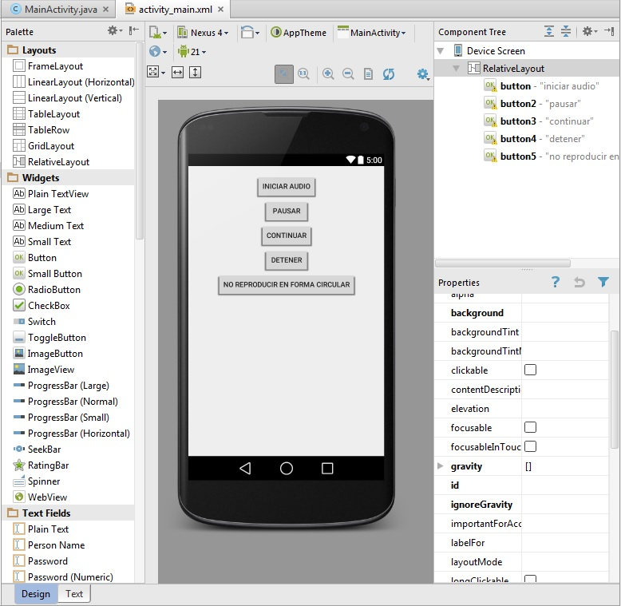
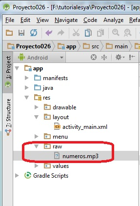

24 - Reproducción, pausa, continuación y detención de un archivo de audio. |
Confeccionar una aplicación que permita Iniciar un archivo mp3, detener, continuar, detener en forma definitiva y activación o no de la reproducción en forma circular.
Crear un archivo mp3 con el programa Audacity contando del 1 al 30.
Primero creamos un proyecto (Proyecto026) y definimos los 5 botones y métodos a ejecutar cuando se presionen los botones respectivos:
Creamos la carpeta raw y almacenamos en la misma el archivo mp3 creado previamente:
El código fuente es:
package ar.com.tutorialesya.proyecto026;
import android.media.MediaPlayer;
import android.support.v7.app.ActionBarActivity;
import android.os.Bundle;
import android.view.Menu;
import android.view.MenuItem;
import android.view.View;
import android.widget.Button;
public class MainActivity extends ActionBarActivity {
MediaPlayer mp;
Button b5;
int posicion = 0;
@Override
protected void onCreate(Bundle savedInstanceState) {
super.onCreate(savedInstanceState);
setContentView(R.layout.activity_main);
b5=(Button)findViewById(R.id.button5);
}
@Override
public boolean onCreateOptionsMenu(Menu menu) {
// Inflate the menu; this adds items to the action bar if it is present.
getMenuInflater().inflate(R.menu.menu_main, menu);
return true;
}
@Override
public boolean onOptionsItemSelected(MenuItem item) {
// Handle action bar item clicks here. The action bar will
// automatically handle clicks on the Home/Up button, so long
// as you specify a parent activity in AndroidManifest.xml.
int id = item.getItemId();
//noinspection SimplifiableIfStatement
if (id == R.id.action_settings) {
return true;
}
return super.onOptionsItemSelected(item);
}
public void destruir() {
if (mp != null)
mp.release();
}
public void iniciar(View v) {
destruir();
mp = MediaPlayer.create(this, R.raw.numeros);
mp.start();
String op = b5.getText().toString();
if (op.equals("no reproducir en forma circular"))
mp.setLooping(false);
else
mp.setLooping(true);
}
public void pausar(View v) {
if (mp != null && mp.isPlaying()) {
posicion = mp.getCurrentPosition();
mp.pause();
}
}
public void continuar(View v) {
if (mp != null && mp.isPlaying() == false) {
mp.seekTo(posicion);
mp.start();
}
}
public void detener(View v) {
if (mp != null) {
mp.stop();
posicion = 0;
}
}
public void circular(View v) {
detener(null);
String op = b5.getText().toString();
if (op.equals("no reproducir en forma circular"))
b5.setText("reproducir en forma circular");
else
b5.setText("no reproducir en forma circular");
}
}
Primero definimos tres atributos uno de la clase MediaPlayer para administrar el archivo mp3, un entero donde se almacena la posición actual de reproducción en milisegundos (para poder continuarla en el futuro) y la referencia de un objeto de la clase Button:
MediaPlayer mp;
Button b5;
int posicion = 0;
El método destruir verifica con un if si el objeto de la clase MediaPlayer está creado procede a liberar recursos del mismo llamando al método release:
public void destruir() {
if(mp!=null)
mp.release();
}
El método iniciar que se ejecuta al presionar el botón "iniciar" primero llama al método destruir (para el caso que el mp3 este en ejecución actualmente) seguidamente creamos un objeto de la clase MediaPlayer llamando al método create (en este hacemos referencia al archivo que copiamos a la carpeta raw) Llamamos al método start. Por último extraemos el texto del quinto botón y verificamos si la reproducción debe ejecutarse en forma circular (en forma indefinida una y otra vez):
public void iniciar(View v) {
destruir();
mp = MediaPlayer.create(this,R.raw.numeros);
mp.start();
String op=b5.getText().toString();
if (op.equals("no reproducir en forma circular"))
mp.setLooping(false);
else
mp.setLooping(true);
}
El método pausar verifica que el objeto de la clase MediaPlayer este creado y en ejecución, en caso afirmativo recuperamos la posición actual de reproducción y llamamos seguidamente al método pause:
public void pausar(View v) {
if(mp != null && mp.isPlaying()) {
posicion = mp.getCurrentPosition();
mp.pause();
}
}
El método continuar verifica que el objeto de la clase MediaPlayer este creado y la propiedad isPlaying retorne false para proceder a posicionar en que milisegundo continuar la reproducción:
public void continuar(View v) {
if(mp != null && mp.isPlaying()==false) {
mp.seekTo(posicion);
mp.start();
}
}
El método detener interrumpe la ejecución del mp3 e inicializa el atributo posicion con cero:
public void detener(View v) {
if(mp != null) {
mp.stop();
posicion = 0;
}
}
Cuando se presiona el botón que cambia si la reproducción se efectúa en forma circular o no procedemos a extraer su texto y según dicho valor almacenamos el valor opuesto:
public void circular(View v) {
detener(null);
String op=b5.getText().toString();
if (op.equals("no reproducir en forma circular"))
b5.setText("reproducir en forma circular");
else
b5.setText("no reproducir en forma circular");
}
Este proyecto lo puede descargar en un zip desde este enlace: proyecto026.zip